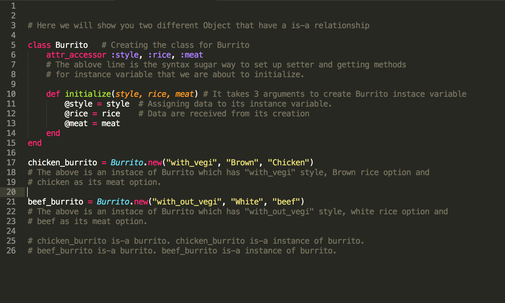

DBC week 6: Technical blog
Ruby Classes
Established on Jan. 16, 2016
We have come a so far to talk about Ruby Class. In Ruby, like other class-based object oriented languages that you may already be familiar with, classes act as the factories and it build instance objects.
An instance object is an object that derived from the class, acquire every traits that the class has. This might sounds a bit abstract. But lets put it this way. A class is the category of its thing, something general.
If you have looked at my about me page. you will know that I love burrito. Especially from chipotle. So let me take it as the example of the explanation of Ruby class and its instance variables and methods.
I like burrito so I made a class called "Burrito". But what if I want a chicken burrito? Do I make a new class for that? Well, you can but what if you suddenly changed you mind and want beef instead? And what if you have 10 friends who want different combination of burrito? As a smart programmer we do not want to repeat similar things again and again. We want to keep every DRY!
So because of that, let me introduce you the concept of creating instance object. As I mentioned eariler, Class object is the general thing, the category of its own. Instance object is a more specific, a liittle bit elaborated item.
Allow me to remind again about instance variable, they are used because we want to make variables visible to different methods within a class. Each individual instance object will have they very own instance variable.
Here is the example of a class creation and an instance object creation.
